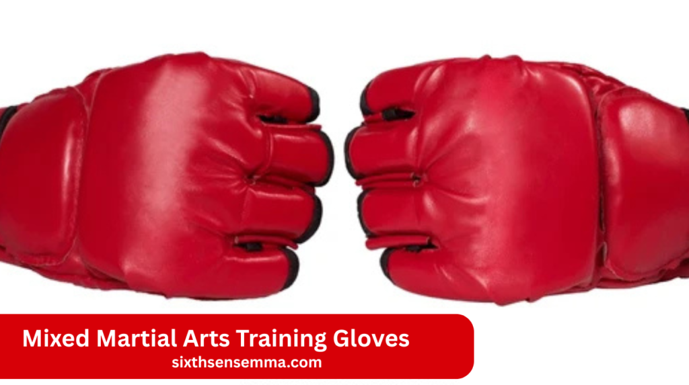
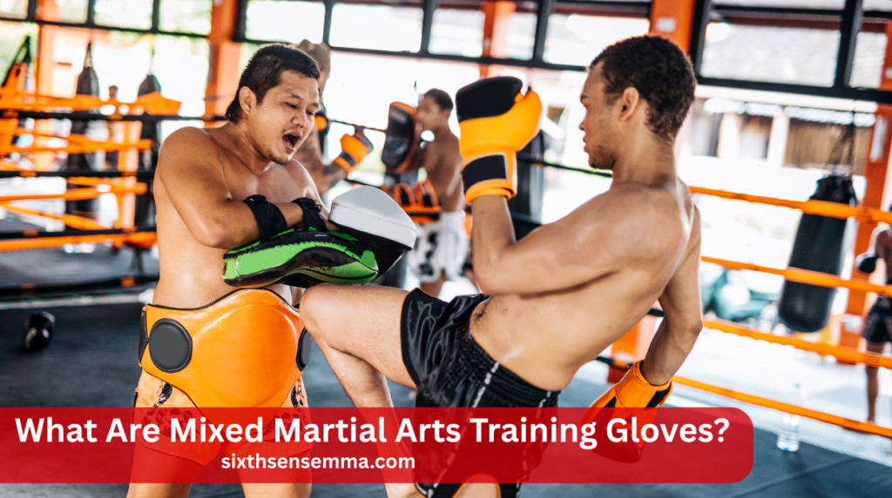
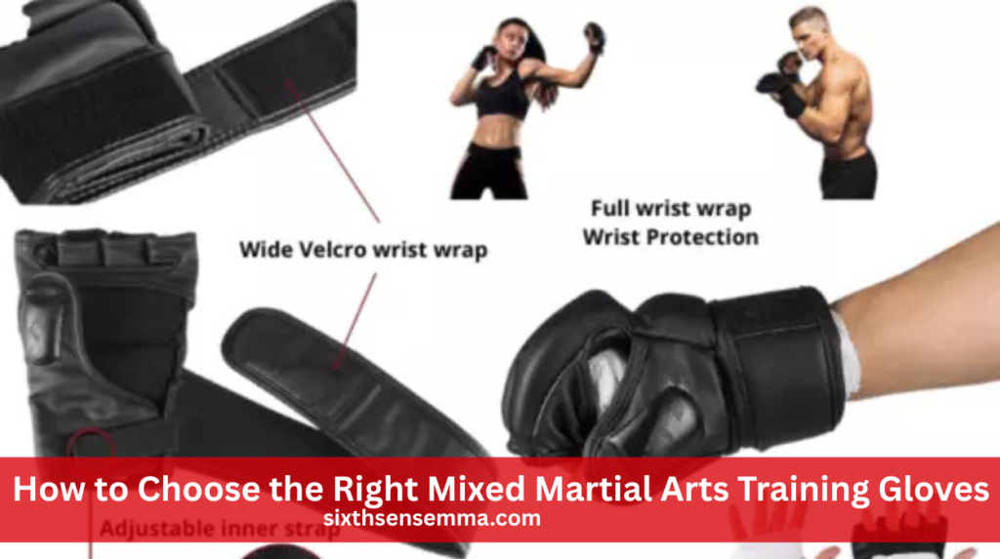
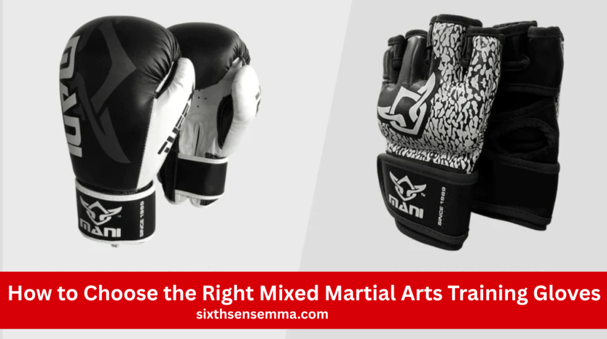

Mixed Martial Arts Training Gloves: Types, Use & Top Brands

Mixed martial arts training gloves are a must-have for anyone serious about MMA. These gloves protect your hands while letting you strike, grapple, and clinch smoothly. Designed with open fingers and padded knuckles, they give both safety and movement. Whether you’re sparring, hitting the bag, or practicing submissions, the right gloves make your training better and safer.
Can I use the same MMA gloves for all types of training?
It’s not a good idea. Different training needs different gloves. Use sparring gloves for partner drills, bag gloves for heavy punches, and grappling gloves for clinch or ground work. This helps protect your hands and improves your training results.
What Are Mixed Martial Arts Training Gloves?

Special gloves used in mixed martial arts training are called Mixed Martial Arts Training Gloves. They are designed to protect your hands during punches and allow your fingers to move freely for grappling. These gloves are lighter than boxing gloves and are made for all kinds of training, like striking, clinching, and ground fighting.
Basic Definition and Use
MMA gloves protect your hands while you train in striking, grappling, or clinch work. They are lighter than regular boxing gloves and allow more hand movement. You can throw punches, hold your opponent, or practice submissions without removing your gloves. They’re made to handle the fast and mixed style of MMA.
Unique Design for MMA (Open Fingers, Padding)
These gloves have an open-finger design so you can grab, hold, or lock your opponent without any trouble. They also have padding over the knuckles to protect your hands when punching. The open palm helps with airflow and grip. This smart design lets you switch between striking and grappling smoothly.
Training vs Competition Gloves
Thick padding in training gloves protects both your hands and your partner while you practice.They are great for long sessions and daily workouts. Competition gloves are thinner, lighter, and made for real fights. They let you punch faster and harder but don’t offer as much protection, so they’re not meant for daily use.
Also Read Our Article: Brazilian Jiu Jitsu Gi Basics: Types, Fit & Buying Tips
Why MMA Training Gloves Are Important
MMA training gloves protect your hands, knuckles, and wrists during intense practice. They allow grip and movement for grappling, while offering enough padding to absorb impact from repeated strikes.
Hand and Wrist Protection
MMA gloves protect your hands, knuckles, and wrists while you train. When you punch, they absorb the impact so you don’t hurt your joints. Without this protection, repeated strikes can lead to sprains, bruises, or long-term injuries. Wearing quality gloves keeps your hands strong and safe for regular workout.
Helps with Grip and Mobility
The open-finger design of MMA gloves lets your fingers move freely. This helps you grab, hold, and control your opponent better during grappling or clinching. You don’t have to take off the gloves to use your grip, which makes transitions between striking and grappling smooth and easy.
Comfort During Long Training Sessions
A good pair of training gloves should feel comfortable, even during long sessions. Breathable material helps reduce sweating, and a snug fit keeps your hands from sliding inside. This means less irritation and better focus. If your gloves are uncomfortable, it can ruin your workout and slow your progress.
Types of Mixed Martial Arts Training Gloves
Mixed Martial Arts Training Gloves come in different styles for specific training needs. Sparring gloves offer protection, grappling gloves allow movement, and bag gloves absorb impact. Selecting the appropriate kind enhances performance and safety.
Sparring Gloves
Thick padding in sparring gloves protects you and your partner as you practice strikes. They’re ideal for partner drills and simulated fights. The extra padding softens blows and lowers the risk of injury, making them perfect for safe, controlled sparring sessions in the gym.
Grappling Gloves
Compared to other kinds, grappling gloves are more flexible and lighter. They’re designed for training that focuses on clinching, submissions, and transitions. The open-finger design allows easy hand movement, helping you grip and control your opponent better. They’re not made for heavy striking but are perfect for groundwork and technique drills.
Punching Bag Gloves
These gloves have thicker padding and strong knuckle protection. They’re built to handle the repeated force from hitting heavy bags. Bag gloves help prevent wrist pain and hand injuries during hard striking workouts. They’re not ideal for grappling but work great for building punching power and endurance.
Competition Gloves
Competition gloves are lighter and have less padding than training gloves. They’re made for speed and power during official fights. These gloves focus on performance and are not ideal for daily training.
What Are Competition MMA Gloves?
Competition MMA gloves are built for real fights. Compared to training gloves, they are thinner, lighter, and less cushioned. This makes punches faster and more powerful. Their slim shape also gives better control and accuracy during a match. These gloves focus on performance, not protection, so they’re not ideal for everyday training use.
Main Differences from Training Gloves
The purpose of training gloves is to keep your hands and partner safe while you practice frequently. They have more padding and a heavier build. Competition gloves, on the other hand, are lighter and offer just enough protection to meet fight rules. They’re all about speed, power, and clean strikes in the cage—not long-term comfort.
When Should You Use Competition Gloves?
Use competition gloves only for official matches or under close supervision during advanced sparring. Since they have minimal padding, they increase the risk of injury if used often. They’re made for short, intense situations not for everyday training. Stick to training gloves unless you’re preparing for a real fight or tournament.
Main Characteristics, Uses, and Pros/Cons of Each Type
Every kind of Mixed Martial Arts Training Gloves has a distinct function. Sparring gloves are padded for safety, grappling gloves are light for flexibility, and bag gloves are built for power. Choose based on your training focus.
Main Functions of Each MMA Glove Type
Sparring gloves have thick padding and are built for partner drills. Grappling gloves are light and flexible for submission work. Bag gloves have dense padding to protect your hands while hitting heavy bags. Each glove type is shaped for a specific task, so using the right one helps you train smarter and safer.
Best Uses for Sparring, Grappling & Bag Gloves
Use sparring gloves when you’re training with a partner to protect both of you. Grappling gloves are best for clinch work, takedowns, and submissions. When it comes to power training on heavy bags, bag gloves are ideal.Choosing the right glove for the job helps you avoid injury and build the right skills.
Pros and Cons of Different MMA Glove Styles
Sparring gloves are safe but bulky, which can slow down strikes. Grappling gloves are lightweight and allow full movement, but don’t protect much during punches. Bag gloves are tough and padded but not good for grabbing. Picking the right glove means balancing comfort, protection, and your training goals.
How to Choose the Right Mixed Martial Arts Training Gloves

Pick gloves based on your training goals. For striking, choose thick padding. For grappling, go for lightweight gloves with finger flexibility. Look for strong wrist support, quality material like leather for durability, and closure systems that stay secure.
Fit and Size
Your gloves shouldn’t be too tight to prevent movement, but they should fit snug enough to stay in place.A snug fit supports your hands and helps avoid injuries during training. Loose gloves can slide or twist, increasing the chance of wrist strain or bruising. If at all possible, try them on before purchasing.
Material
Real leather gloves are more durable and last longer with heavy use. They cost more but are worth it if you train often. Synthetic gloves are cheaper and still work well, especially for beginners or light use. Choose your glove material based on how often you train and how much you want to spend.
Padding and Weight
Thicker padding gives you more protection but can slow your strikes. Lighter gloves are better for speed and movement but don’t absorb impact as well. Lighter gloves are better for grappling or fast drills. Balance safety and speed based on your training focus.
Wrist Support and Closure System
Wrist support in MMA gloves is key for preventing injuries during strikes. A firm wrist keeps punches stable and aligned. Most gloves use Velcro or hook-and-loop closures, which are easy to adjust and keep gloves tightly secured.
Importance of Wrist Support in MMA Gloves
Wrist support is key to avoiding injuries during punches. It keeps your wrist straight, so it doesn’t bend the wrong way when you strike. Strong wrist support gives you more control and helps you punch with power while staying safe. It also lowers the risk of sprains, twists, or long-term damage.
Types of Closure Systems (Velcro, Hook & Loop)
Most Mixed Martial Arts Training Gloves come with Velcro or hook-and-loop closures. These straps are quick to use and easy to adjust. They help keep the glove snug on your hand and provide extra wrist support. A good closure system prevents the glove from slipping and makes sure your wrist stays secure during training.
Choosing the Right Fit for Maximum Stability
Make sure your gloves wrap around your wrist tightly without being too tight. A proper fit gives your hand and wrist the support they need for safe training. Gloves that are too loose can slide or twist. Too tight, and they cut off circulation.
Intended Use (Sparring, Bag Work, Grappling)
Different gloves serve different training needs. Extra padding in sparring gloves protects you and your partner.Bag gloves are heavily cushioned for absorbing impact during power punches.
Best Gloves for Sparring Sessions
For sparring, use gloves with thick padding and strong wrist support. These help protect both you and your training partner during punches and clinch work. Sparring gloves are heavier to reduce the impact of each strike and make training safer. Always check that they’re made for sparring, not just regular training.
Ideal Gloves for Heavy Bag Training
Heavy bag gloves should have tough knuckle padding and firm wrist wraps. Hitting a bag creates a lot of shock, so these gloves need to absorb impact well. They are built to handle repeated hard punches and keep your hands and wrists safe. Don’t use sparring gloves on the heavy bag.
Recommended Gloves for Grappling Practice
Grappling gloves are light and have an open-palm design. They let your fingers move freely for submissions, clinches, and takedowns. These gloves are perfect for practicing transitions and ground techniques. Make sure they fit tight so they don’t shift during practice. Avoid using bag gloves when doing grappling drills.
Best Brands for Mixed Martial Arts Training Gloves
Top Mixed Martial Arts Training Gloves brands focus on quality, comfort, and durability. Hayabusa is known for premium gloves with strong wrist support. Venum offers reliable, stylish gloves great for all levels. RDX provides affordable, high-performing gloves ideal for beginners.
Hayabusa
Hayabusa gloves are known for top-level quality. They offer great wrist support, premium materials, and a secure fit. Because of its comfort and durability, many professional fighters opt for them. They may cost more, but they last a long time and perform well during intense training. Ideal for serious practitioners and advanced athletes.
Venum
Venum is popular for making strong and affordable gloves. They are well-padded, reliable, and stylish. Venum gloves work for all skill levels, from beginner to pro. They’re widely used in MMA gyms and offer great value. The wrist support is solid, and the gloves hold up well during tough workouts.
RDX
RDX is a good choice for beginners and budget-minded fighters. Their gloves offer decent protection, solid wrist support, and comfort. RDX models are great for light sparring, bag work, and general training. While not as premium as Hayabusa, they’re durable and offer great performance for their price.
Tips to Maintain Your MMA Gloves
Clean your gloves after each session, let them air dry, and store them in a cool, dry place. Replace worn-out gloves to avoid injury and maintain hygiene.
Cleaning Your Gloves
After each session, wipe down your gloves with a clean cloth or a mild disinfectant spray. This keeps sweat, bacteria, and bad odors away. Don’t forget to clean the inside too. Regular cleaning keeps your gloves in good shape and extends their lifespan, especially if you train several times a week.
Drying and Storage
Let your gloves air dry completely after every workout. Don’t leave them in your gym bag—they’ll trap moisture and start to smell. Use glove deodorizers or hang them up to dry. Store them in a cool, dry place away from direct sunlight to prevent cracking or material damage over time.
When to Replace
Replace your gloves when the padding becomes thin, the wrist support weakens, or the fit loosens. Cracked leather or a worn-out interior means the gloves no longer protect your hands. Training with old gloves can lead to injuries. Check your gloves regularly to see if they’re still in good condition.
Common Mistakes When Using MMA Training Gloves
Using the wrong glove type for training, skipping hand wraps, or wearing loose or overly tight gloves can lead to injuries. Always make sure your gloves fit properly and complement your activity.
Choosing the Wrong Glove Type
Using the wrong gloves for your activity can lead to injuries. For example, don’t use grappling gloves on the heavy bag—they lack the needed padding. Always pick gloves that match your training—sparring, grappling, or bag work. Each type is designed for a different purpose and offers the right protection.
Ignoring Proper Fit
Wearing gloves that don’t fit well can reduce hand control and increase injury risk. Gloves that are too loose shift during strikes. Gloves that are too tight can cut off blood flow. Always try on gloves before buying or check the size chart carefully to find the most secure and comfortable fit.
Not Using Hand Wraps
Hand wraps protect the small bones in your hands and add wrist support. Skipping them can lead to sprains, bruises, or worse. Always wrap your hands before putting on your gloves, especially during bag work or sparring. It’s a simple step that makes a big difference in injury prevention.
Also Read Our Article: Top Mixed Martial Arts Brands for Gear & Apparel
MMA Gloves vs Boxing Gloves

MMA gloves are lighter with open fingers, made for both striking and grappling. Boxing gloves are fully padded, heavier, and designed only for striking. Mixed Martial Arts Training Gloves offer mobility, while boxing gloves focus on protection.
Design Differences
Mixed Martial Arts Training Gloves are smaller with open fingers. They’re built for striking and grappling. Boxing gloves are large, closed-fist gloves with more padding. They focus only on punching. MMA gloves offer more movement and flexibility, while boxing gloves limit motion but give stronger protection for fists during strikes.
Use in Training
Boxing gloves are ideal for striking-only workouts like pad work or bag training. MMA gloves are made for multi-skill training that includes punches, grappling, and clinches. Use boxing gloves when you want to focus on boxing skills. Use MMA gloves when your training includes both striking and ground work.
Weight and Padding
Boxing gloves are heavier, with more padding around the knuckles and wrist. They absorb punches better and protect your hands during long sessions. Mixed Martial Arts Training Gloves are lighter with thinner padding. They’re good for speed, grip, and movement but provide less cushion, so technique and hand wraps become more important.
Conclusion
Choosing the right mixed martial arts training gloves is key to safe and effective training. Each type—sparring, grappling, or bag gloves—serves a special purpose. Good gloves protect your hands, improve performance, and make training more comfortable. Always pick gloves based on your training goals, ensure a proper fit, and take care of them to make them last longer.
FAQ’s
Heavy gloves don’t necessarily hurt more—they have more padding to absorb impact. They’re safer for training and protect both fighters. However, they can slow down punches.
Boxers often hit harder because they focus only on punches. Their technique and glove weight add to the impact. MMA fighters strike hard too, but use a wider range of moves.
Punching with gloves can still hurt, especially with bad technique or worn-out gloves. Gloves reduce injury but don’t remove all impact. Hand wraps help add protection.
Competition MMA gloves hit the hardest due to less padding and lighter weight. They’re designed for speed and power. But they offer less protection for daily training.
Gloves should fit snug—not too tight or too loose. Tight gloves support your wrist and keep your hands stable. Loose gloves can move around and cause injury.
Yes, but it’s risky. Without gloves, there’s more damage to both the puncher and the opponent. Gloves protect the hands and reduce serious injury during impact.
Yes, boxing gloves are safer because they have more padding. They’re made for longer striking sessions. MMA gloves offer less protection but allow more movement.
Both sports have risks, but MMA spreads damage across different body parts. Boxing focuses on head strikes, which can lead to more long-term injuries. Safety depends on rules and style.
Not always. Boxing is strong in striking, but it lacks grappling or kicks. Other martial arts can counter boxers using takedowns or submissions.
UFC fighters can punch with 800–1,200 pounds of force. That’s enough to knock someone out easily. Strength, speed, and technique all add to that power.
Train with us in Coppell
The first class is free. Shorts, a t-shirt and a water bottle. We lend the rest.
Book a free class